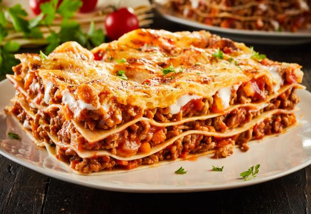

RECEITA DE LASANHA A BOLONHESA
Essa é receita é para você que quer uma receita simples e muito deliciosa!

Ingredientes
Molho a Bolonhesa
- 500g de carne moída
- 1 cebola picada
- 2 dentes de alho picados
- 1 lata de molho de tomate (ou 2 xícaras)
- 1 tomate picado
- Sal e pimenta a gosto
- 1 colher de chá de orégano
- 1 fio de azeite
Camadas da Lasanha:
- 500g de massa para lasanha (pré-cozida ou direto ao forno)
- 300g de queijo mussarela
- 200g de presunto (opcional)
- 200ml de creme de leite (opcional, para deixar mais cremoso)
- 50g de queijo parmesão ralado
Modo De Preparo
1. Prepare o molho à bolonhesa:
- Em uma panela, aqueça um fio de azeite e refogue a cebola e o alho.
- Adicione a carne moída e cozinhe até dourar.
- Acrescente o tomate picado, o molho de tomate, sal, pimenta e orégano.
- Cozinhe por cerca de 10 minutos em fogo médio.
2. Monte a lasanha:
- Em uma travessa, coloque uma camada de molho.
- Adicione uma camada de massa, seguida de presunto, queijo mussarela e mais molho.
- Repita as camadas até terminar os ingredientes.
- Finalize com creme de leite (se for usar) e queijo parmesão ralado por cima.
3. Asse no forno:
- Cubra com papel alumínio e asse por 30 minutos a 180°C.
- Retire o papel alumínio e asse por mais 10 minutos para gratinar.
Dica: Se quiser, adicione requeijão cremoso entre as camadas para deixar ainda mais gostoso!
Pronto! Agora é só servir essa lasanha deliciosa. Vai testar essa receita?